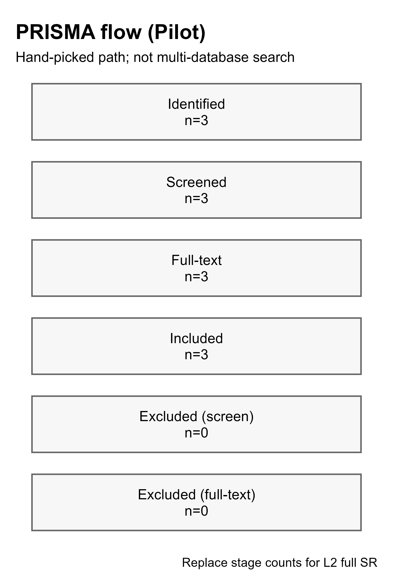
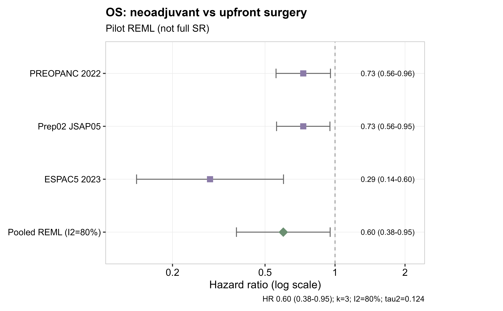
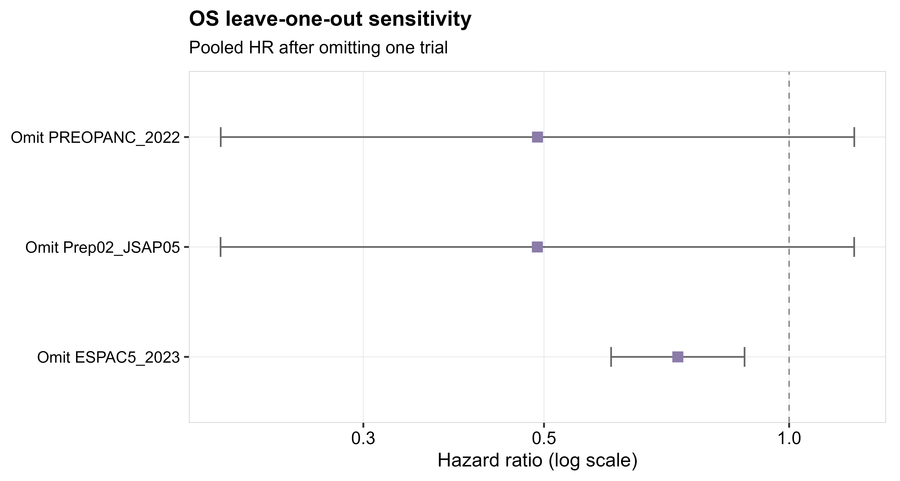
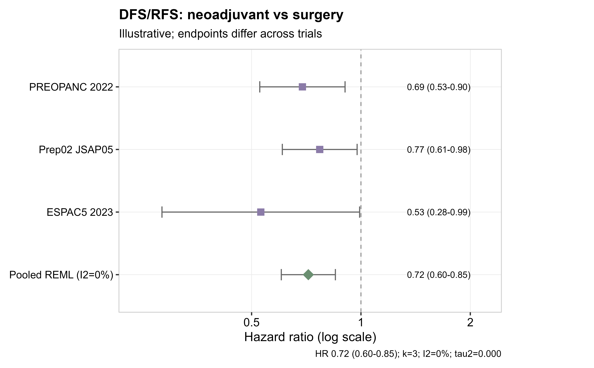
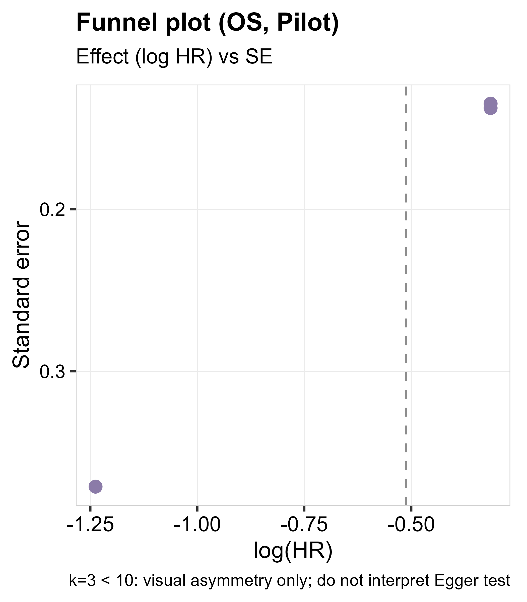
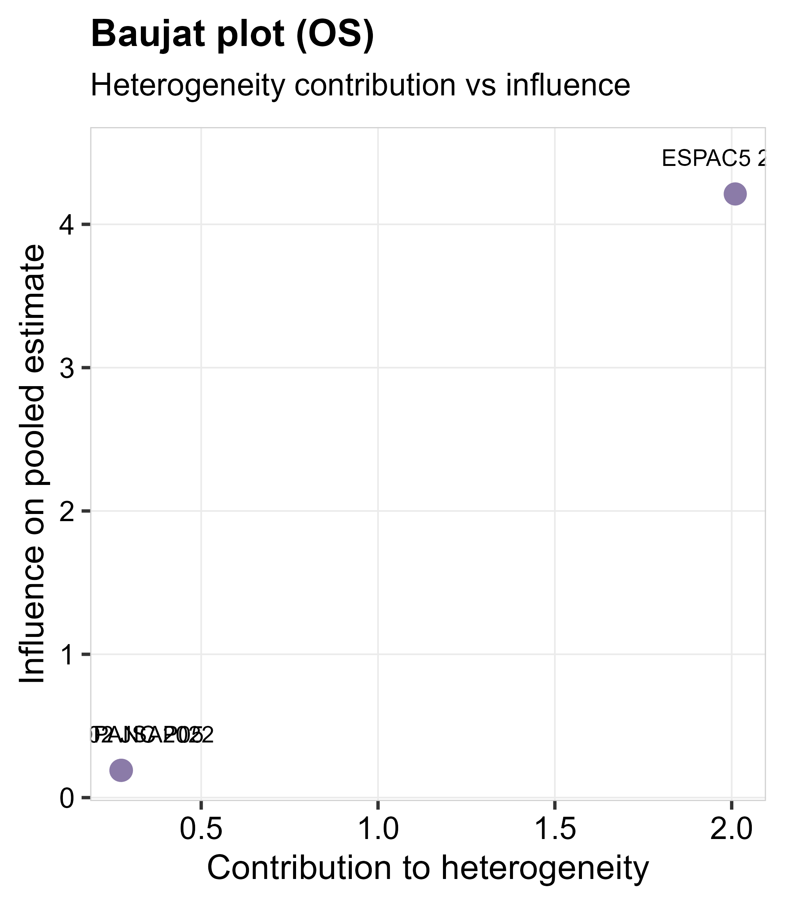
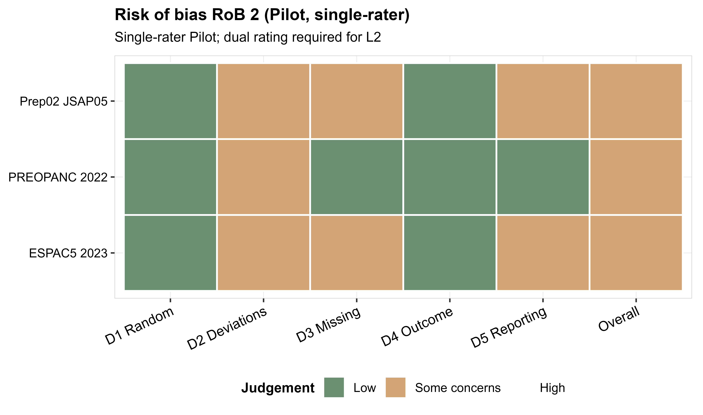
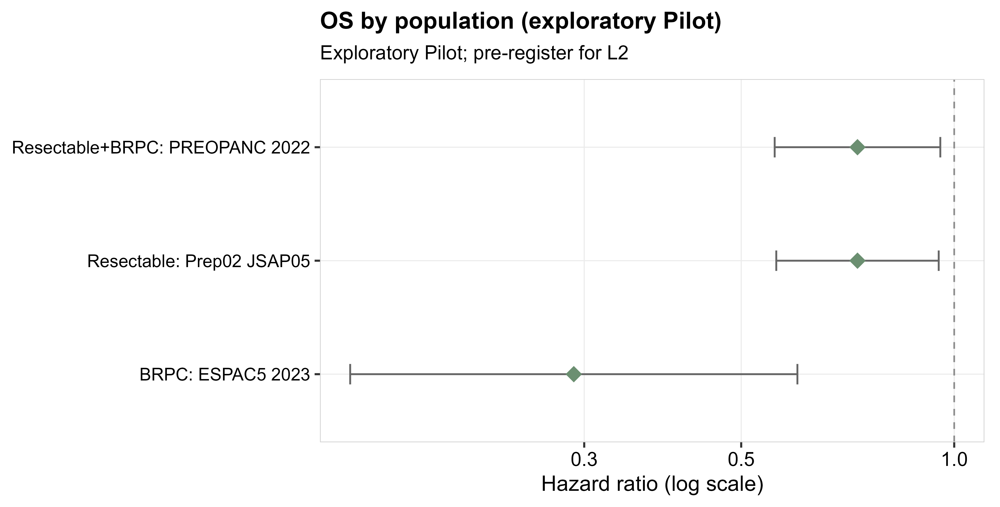

PRISMA flow (Pilot)

DeliveryStandards sample report
Pancreatic cancer: neoadjuvant vs upfront surgery — L1 Pilot atlas
Expanded figure set aligned to journal SRMA practice. Still not a full systematic review.
L1 Pilot / 非完整系统评价。未做多库系统检索、双人筛选与双人 RoB、GRADE。PRISMA 计数为手选路径；漏斗图 k<10 仅视觉；RoB 为单人试填。不可作为治疗决策或投稿结论。R0/切除率森林图需 2×2 事件数，本 Pilot 未编造，留待 L2。
REML（metafor）；图册 SSOT：文档_docs/高分刊Meta图册与工作量_JournalFigureWorkload.md；VizStandards + DeliveryStandards。
data_provenance = REAL。见 数据文件/DATA_SOURCE.md；PRISMA/RoB 见 04_*、05_*。
| 技能 | MetaAnalysis |
|---|---|
| 审计阶段 | post |
| 行数 / 帧数 | 3 |
| 列数 | 21 |
| 样本数 | 3 |
| 分组来源 | published RCT HRs (Pilot selection) |
| toy | FALSE |
| 数据来源标注 | REAL |
| Accession / PDB | PREOPANC_2022,Prep02_JSAP05,ESPAC5_2023 |
| 已 source 脚本 | 医学SRMA合并_poolMedicalSrma.R; 医学SRMA出图_plotMedicalSrma.R |
| 备注 | L1 Pilot atlas: PRISMA+OS+LOO+DFS/RFS+funnel+Baujat+RoB2+subgroup; OS HR=0.599 (95%CI 0.377-0.953); I2=79.9%; NOT full SR/GRADE; funnel k<10 visual only |
| 审计时间 | 2026-09-06 22:58:41 |








对齐 PRISMA 2020 / Cochrane 图种与同题高分文（如 J Clin Med 2020 RCT-only SRMA）：流程 → 主终点森林 → 次要终点 → 敏感性 → 漏斗/Baujat → RoB → 亚组。
k=3；HR = 0.60（95%CI 0.38–0.95）；I² = 79.9%。方向利于新辅助，但设计异质（ESPAC5 可行性、随访短）。
DFS/RFS 示意合并 HR = 0.72；终点定义不完全一致。漏斗不做 Egger 结论。亚组按 population 字段探索性展示。